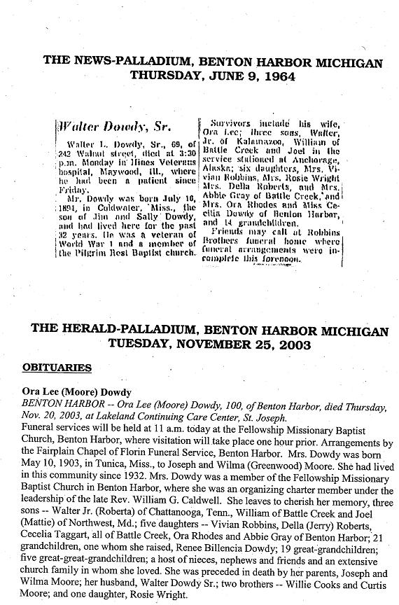

|
This Lineage Last Updated
September 2023
Joseph Dowdy
of DeSoto Co Mississippi - born
about 1819 in Georgia (b TN in 1880 census). Appeared as head
of household in 1870 DeSoto MS census (Archbutta PO) and in Poagsville
Tate Co MS in 1880 (father and mother b GA) A Sue Hunter age
21 lived in the 1870 Dowdy household as a domestic servant.
married Martha ________ age 38 in 1870 census; born
MS
children:
1(i). James Dowdy born abotu 1853 MS, age 16 in 1870,
another census says June 1846) - lived Poagsville Tate Co MS
in 1880 census with wife and son Jimmy; Lived Memphis, Shelby
TN in 1900 census.
married Sallie Woods on 9 September 1871 in DeSoto
Co MS, age 25 in 1880 census b MS
children:
2(i). Jimmy Dowdy age 2 in 1880 b MS; Lived with parents
in Memphis, Shelby Co TN in 1900
2(ii). Brackster Dowdy born October 1880 or 1881, Lived
with parents in Memphis, Shelby Co TN in 1900. Untraced after
1900.
2(iii). Walter Dowdy born 16 July 1894 or 1895; Lived
with parents in Memphis, Shelby Co TN in 1900 ; Eventually moved
to Benton Harbor Michigan and raised nine children: six daughters
and three sons:
married Ora Lee Moore on 17 April 1919 in Tunica Mississippi.
children:
3(i). Vivian Dowdy
3(ii). Ora Dowdy
3(iii). Della Dowdy
3(iv). Rosie Dowdy
3(v). Abbey Dowdy
3(vi). Cecelia Dowdy
3(vii). Walter Dowdy
3(viii). Bill Dowdy
3(ix). Joe Dowdy
1(ii). Mary Dowdy born about 1855, age 15 in 1870 census
1(iii). Samuel Dowdy born about 1857, age 13 in 1870
census
1(iv). Jackson "Jack" Dowdy born about 1858,
age 12 in 1870; lived in Tunica MS in 1900 [however birthdate
is 1865 in census]. Grandsons Laverne and Homer Wheeler and Grandaugher
Eliz Wheeler Lived in 1920 HH in Tunica MS (on Bonnie Blue Road)
married Nancy_______ age 33 in 1900 census; married
for 16 years
children:
2(i). Mary E. Dowdy born June 1885
2(ii). Lela Dowdy born May 1888
2(iii). Martha Dowdy born March 1890 Lived with parents
in 1910 census; She married ____ Ashley
2(iv). Annie B. Dowdy born February 1892 Lived with
parents in 1910. She married ____ ?Deberry. Her 2 children lived
in parent's HH in 1910
2(v). Jesse Dowdy born March 1898
2(vi). Esther Dowdy born 1902
1(v). Andrew Dowdy born about 1864, age 6 in 1870 census;
remembered by descendants of Jim Dowdy's son Walter Dowdy as
an uncle of Walter.; Lived in Memphis, Shelby TN in 1900 census
(born Sept 1865). Stepdaughter Virginia Clancy age 8 in HH; Age
35 in 1910 census (born 1875). No wife. Nephew Walter Dowdy age
14 Lived in HH
married Caroline ______ She was born December 1871
(note: an apparently ?different Andrew
Dowdy b 1872 lived in Tunica MS in 1920 census with wife Annie
and son Edward Dowdy, age 14. No other Andrew Dowdy fitting the
above profile has been located in the 1920 census)
1(vi). Emma Dowdy born abotu 1867, age 3 in 1870 census
1(vii). Josiah Dowdy born about 1870, age 3/12 in 1870
census
1(viii). Ed Dowdy born about 1871, age [8 or 9?] in
1880 census
1(ix). Marthy Dowdy born about 1873, age 7 in 1880
census

1870 DeSoto MS Census - African American Families
Joseph Dowdy 51 b GA Twp 4 Range 7 (blk)
Martha 38 b GA
James 16 b MS
Mary 15 b MS
Samuel 13 b MS
Jackson 12 b MS
Andrew 6 b MS
Emma 3 b MS
Josiah 3/12 b MS
Sue Hunter 21 b NC
Doc McGee 31 b MS Twp 4 Range 7 (blk)
Martha 27 b MS
Fanny 3 b MS
Andrew Dowdy 45 b GA
Patricia Dowdy 6 b MS
Chas Duffe [?Dowdy] 30 b GA
Jesse Dowdy 47 b TN Twp 4 Range 7 (blk)
Sally 33 b KY
William 13 b MS
Elizabeth 14 b MS (out of order)
Aaron 12 b MS
Samuel 12 b MS
Diley 9 b MS (f)
Henry 7 b MS
Edward 5 b MS
Eliza 2 b MS
E J Graham 33 b MS (w)
Lutisia 24 b GA
CR Kirland 25 b AL
Ben Doudy 17 b VA (blk)
DeSoto marriages:
Dowdy, T. B. (groom) m. Wright, Emma 15 Jun 1866
Dowdy, L. A. (bride) m. McCurry, W. G. 28 Mar 1867
Downer, N. J. (bride) m. Boggan, T. D. 14 Apr 1868
1880 Tate MS Census - Poagsville (Tate county was formed
in 1873 from DeSoto, Marshall and Tunica Counties)
A Lucy Dowdy age 70 is Lived in HH of William Johnson. Enumerated
as his mother. This HH is only a few doors down from Joe Dowdy
and Jim Dowdy (of the lineage above)
Research Note: A Willis W. M. Dowdy family of some wealth
migrated from Oglethorpe Co GA to DeSoto Co MS and appeared there
in the 1860 census. This information may be a clue as to the
migration origins of the above family, or may be a coincidence.
1860 Slave Schedule for DeSoto MS
Age of Slave; gender; race; Name of Owner; County; State
54 Male Black R J Dowdy DE Soto, Mississippi
17 Female Black R J Dowdy DE Soto, Mississippi
14 Female Black R J Dowdy DE Soto, Mississippi
40 Male Black Felix Dowdy DE Soto, Mississippi
35 Female Black Felix Dowdy DE Soto, Mississippi
16 Male Mulatto Felix Dowdy DE Soto, Mississippi
14 Male Mulatto Felix Dowdy DE Soto, Mississippi
8 Male Mulatto Felix Dowdy DE Soto, Mississippi
8 Female Black Felix Dowdy DE Soto, Mississippi
5 Female Black Felix Dowdy DE Soto, Mississippi
57 Male Black W W M Dowdy DE Soto, Mississippi
40 Male Black W W M Dowdy DE Soto, Mississippi
40 Female Black W W M Dowdy DE Soto, Mississippi
35 Female Mulatto W W M Dowdy DE Soto, Mississippi
35 Female Black W W M Dowdy DE Soto, Mississippi
35 Female Black W W M Dowdy DE Soto, Mississippi
30 Male Black W W M Dowdy DE Soto, Mississippi
30 Male Black W W M Dowdy DE Soto, Mississippi
26 Male Mulatto W W M Dowdy DE Soto, Mississippi
25 Male Black W W M Dowdy DE Soto, Mississippi
25 Female Black W W M Dowdy DE Soto, Mississippi
18 Female Black W W M Dowdy DE Soto, Mississippi
18 Female Black W W M Dowdy DE Soto, Mississippi
17 Female Black W W M Dowdy DE Soto, Mississippi
17 Female Black W W M Dowdy DE Soto, Mississippi
16 Female Black W W M Dowdy DE Soto, Mississippi
16 Female Black W W M Dowdy DE Soto, Mississippi
14 Female Mulatto W W M Dowdy DE Soto, Mississippi
14 Female Black W W M Dowdy DE Soto, Mississippi
12 Male Mulatto W W M Dowdy DE Soto, Mississippi
12 Female Black W W M Dowdy DE Soto, Mississippi
12 Male Black W W M Dowdy DE Soto, Mississippi
12 Male Black W W M Dowdy DE Soto, Mississippi
11 Male Black W W M Dowdy DE Soto, Mississippi
10 Male Black W W M Dowdy DE Soto, Mississippi
10 Male Black W W M Dowdy DE Soto, Mississippi
10 Female Black W W M Dowdy DE Soto, Mississippi
9 Male Black W W M Dowdy DE Soto, Mississippi
8 Female Black W W M Dowdy DE Soto, Mississippi
7 Female Black W W M Dowdy DE Soto, Mississippi
4 Male Black W W M Dowdy DE Soto, Mississippi
4 Male Black W W M Dowdy DE Soto, Mississippi
2 Male Black W W M Dowdy DE Soto, Mississippi
1 Male Black W W M Dowdy DE Soto, Mississippi
1 Female Mulatto W W M Dowdy DE Soto, Mississippi
EMAIL CORRESPONDENCE
Hello Ken,
I don't exactly have a family tree, but here is the information
that I was able to find out as I did my research.
My great-grandparents Jim Dowdy (born June 1846 in Mississippi)
and Sallie Woods (born March 1850 in Mississippi) were married
in DeSoto County, Mississippi on September 9, 1871, Jim was a
farmer; he could read but could not write; his wife Sallie, like
many people of that time, could do neither.
According to Census records, they had three sons: Jimmie
in March 1878, Brackster in October 1880 or 1881, and my grandfatherWalter
on July 16, 1894 or 1895(though his birth year varies on the
census forms).
In the year 1880, Jim and Sallie lived in Poagsville, Mississippi,
where Jim farmed and Sallie kept house. About twenty years later
in 1900, they resided in Shelby County Tennessee; Jim was employed
as a drayman, he hauled goods on a low flat bed wagon. Their
youngest child, Walter, my grandfather was only 5 years old at
the time. His older brother Brackster who was 19 worked as a
cook. For reasons unknown, my grandfather Walter lived with his
uncle Andrew Dowdy in a boarding house in 1910. All of the men
in the house worked as laborers in factories, sawmills and brickyards,
and as a teenager, Walter worked in a factory. A young woman
named Annie Morris lived there too and was the boarding house
cook.
When Walter was 22 years old, in June 1917, he registered
for World War I. His registration card listed his occupation
as a farmhand. A few years later he married Ora Lee Moore on
April 17, 1919 in Tunica Mississippi. Eventually, they traveled
to Benton Harbor Michigan and raised nine children, six daughters
and three sons: Vivian, Ora, Della, Rosie, Abbey, Cecelia, Walter,
Bill, and Joe. Their son Joe is my father.
Hope this information helps.
Joanna_Dowdy@discovery.com
|

 Joseph
Dowdy
Joseph
Dowdy